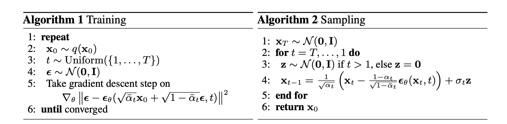

Notes for “Denoising Diffusion Probabilistic Models”
My notes for the “Denoising Diffusion Probabilistic Models” paper. Feel free to ask questions on my telegram channel
Background
Forward Process
We have latent variables \(\mathbf{x_1},\mathbf{x_2}, ..., \mathbf{x_T}\) of the same dimensionality as the image \(\mathbf{x_0}\). The forward process or diffusion process is fixed to a Markov chain that gradually adds Gaussian noise to the image according to a variance schedule \(\beta_1, ..., \beta_T\):
\[ \mathbf{ q(x_t|x_{t-1})= \mathcal{N} (x_t; \sqrt{1-\beta_t}x_{t-1}, \beta_{t}I), \quad q(x_{1:T}|x_0)= \prod_{t=1}^T{q(x_t|x_{t-1})} } \]
The above equation means that we start with our data \(\mathbf{x_0}\), then we sample a noisy version of our image \(\mathbf{x_1}\) with the mean \(\mathbf{x_0}\) scaled by \(\mathbf{\sqrt{1-\beta_1}}\) and the variance \(\mathbf{\beta_1}\). Finally, we repeat this process \(\mathbf{T}\) times and arrive at pure standard Gaussian noise when small enough \(\mathbf{\beta}\) and large enough \(\mathbf{T}\) values are used. This process is fixed and not learned, unlike variational auto-encoder (VAE) models.
A nice benefit from the forward process is that we can sample \(\mathbf{x_t}\) at any timestep \(\mathbf{t}\) in closed form without simulating the forward process steps \(\mathbf{t}\) times. Let \(\mathbf{\alpha_t=1-\beta_t}\) and \(\mathbf{ \bar{\alpha}_t = \prod_{i=1}^t\alpha_i }\) :
\[ \mathbf { q(x_t|x_0) = \mathcal{N}(x_t; \sqrt{\bar{\alpha_t}}x_0, (1-\bar{\alpha}_t)I) } \]
We can view the forward process as transitioning from our real-life complex distribution (image) to a simpler standard Gaussian distribution.
Reverse Process
The reverse process is a learned Gaussian transition starting at a pure standard Gaussian noise \(p(\mathbf{x}_T)=\mathcal{N}(\mathbf{x}_T; \mathbf{0}, \mathbf{I})\), then:
\[ p_{\theta}(\mathbf{x_{t-1}|x_t}) = \mathcal{N}(\mathbf{x_{t-1}}; \mathbf{\mu_\theta(x_t, t), \Sigma_\theta(x_t, t)}) \quad p_\theta(\mathbf{x}_{0:T}) = p(\mathbf{x}_T)\prod_{t=1}^T{p_\theta(\mathbf{x_{t-1}|x_t})} \]
The above means that we start with a pure noise \(\mathbf{x}_T\), then we gradually remove noises by sampling from learned means \(\mu_\theta(\mathbf{x_t; t})\) and variances \(\mathbf{\Sigma_\theta(x_t, t)}\) parameterized by \(\mathbf{\theta}\).
We can view the reverse process as transitioning from a simple standard Gaussian distribution to our real-life complex distribution inferred from the dataset. All possible images are reachable from the final standard Gaussian noise; however, fewer and fewer images will be reachable as we go in reverse. See the images below for reachable images from \(\mathbf{x}_{1000}\), \(\mathbf{x}_{750}\), \(\mathbf{x}_{500}\), \(\mathbf{x}_{250}\), \(\mathbf{x}_{0}\)
Loss
Training is performed by optimizing the variational lower bound (or the evidence lower bound) similar to the VAE:
\[ \mathbb{E}[-\log p_\theta(\mathbf{x}_0)] \le \mathbb{E}_q\left[-\log \frac{p_\theta(\mathbf{x_{0:T}})}{q(\mathbf{x_{1:T}}|\mathbf{x_0})} \right]= \mathbb{E_q}\left[ -\log p(\mathbf{x_T}) - \sum_{t\ge1}\log{\frac{p_\theta(\mathbf{x_{t-1}|x_t})}{q(\mathbf{x_{t}|x_{t-1}})}} \right] \]
Proof 1: Using Jensen’s Inequality
\[ \mathbf { \begin{aligned} \log p_\theta(\mathbf{x})&=log\int{p_\theta(\mathbf{x_{0:T}})d\mathbf{x_{1:T}}}\\ &=log\int{ \frac {p_\theta(\mathbf{x_{0:T}}) q(\mathbf{x_{1:T}}|\mathbf{x_0}) } {q(\mathbf{x_{1:T}}|\mathbf{x_0})} d\mathbf{x_{1:T}} }\\ &=\log \mathbb{E}_{q(\mathbf{x_{1:T}}|\mathbf{x_0})}\left[ \frac{p_\theta(\mathbf{x_{0:T}})}{q(\mathbf{x_{1:T}}|\mathbf{x_0})} \right]\\ &\ge \mathbb{E}_{q(\mathbf{x_{1:T}}|\mathbf{x_0})}\left[ \log \frac{p_\theta(\mathbf{x_{0:T}})}{q(\mathbf{x_{1:T}}|\mathbf{x_0})} \right]\\ \end{aligned} } \]
Proof 2: Using KL Divergence
\[ \mathbf { \begin{aligned} \log p(\mathbf{x_0})&=\log p(\mathbf{x_0}) \int { q(\mathbf{x_{1:T}}|\mathbf{x_0}) d\mathbf{x_{1:T}} } \\ &= \int { q(\mathbf{x_{1:T}}|\mathbf{x_0}) (\log p(\mathbf{x_0})) d\mathbf{x_{1:T}} } \\ &= \mathbb{E}_{q(\mathbf{x_{1:T}}|\mathbf{x_0})} \left[ \log p(\mathbf{x_0}) \right]\\ &= \mathbb{E}_{q(\mathbf{x_{1:T}}|\mathbf{x_0})} \left[ \log \frac{q(\mathbf{x_{0:T}})}{q(\mathbf{x_{1:T}}|\mathbf{x_0})} \right]\\ &= \mathbb{E}_{q(\mathbf{x_{1:T}}|\mathbf{x_0})} \left[ \log \frac{ q(\mathbf{x_{0:T}}) p_\theta(\mathbf{x_{0:T}}) }{ q(\mathbf{x_{1:T}}|\mathbf{x_0}) p_\theta(\mathbf{x_{0:T}})} \right]\\ &=\mathbb{E}_{q(\mathbf{x_{1:T}}|\mathbf{x_0})} \left[ \log \frac{ p_\theta(\mathbf{x_{0:T}}) }{ q(\mathbf{x_{1:T}}|\mathbf{x_0})} \right] + \mathbb{E}_{q(\mathbf{x_{1:T}}|\mathbf{x_0})} \left[ \log \frac{ q(\mathbf{x_{1:T}|x_0})p(\mathbf{x_0}) }{ p_\theta(\mathbf{x_{1:T}|x_0})p(\mathbf{x_0}) } \right]\\ &=\mathbb{E}_{q(\mathbf{x_{1:T}}|\mathbf{x_0})} \left[ \log \frac{ p_\theta(\mathbf{x_{0:T}}) }{ q(\mathbf{x_{1:T}}|\mathbf{x_0})} \right] + D_{KL}(q(\mathbf{x_{1:T}}|\mathbf{x_0}) || p_\theta(\mathbf{x_{1:T}|x_0}))\\ &\ge \mathbb{E}_{q(\mathbf{x_{1:T}}|\mathbf{x_0})} \left[ \log \frac{ p_\theta(\mathbf{x_{0:T}}) }{ q(\mathbf{x_{1:T}}|\mathbf{x_0})} \right] \end{aligned} } \]
The KL divergence is always non-negative, hence the lower bound approximation
The forward process variances \(\beta_t\) are hyperparameters. The reverse process \(p_\theta(\mathbf{x_{t-1} | x_t})\) is Gaussian, when the forward process is Gaussian and \(\beta_t\) are small.
Efficient training is possible by optimizing random terms of the loss, however it requires two random variables for each term, \(\mathbf{x_{t-1}}\) and \(\mathbf{x_{t}}\), which introduces high variance Monte Carlo estimates. We can reduce the variance:
\[ E_q \left[ D_{KL}(q(\mathbf{x_T|x_0}||p(\mathbf{x_T})) + \sum_{t\gt1}{D_{KL}(q(\mathbf{x_{t-1}|x_t,x_0})||p_\theta(\mathbf{x_{t-1}|x_t}))} - \log p_\theta(\mathbf{x_0|x_1}) \right] \]
\[ \begin{aligned} L &= \mathbb{E}_{q( \mathbf{x_{1:T}|x0} )} \left[ -\log \frac{p_\theta(\mathbf{x_{0:T}}) } { q(\mathbf{x_{1:T}|x_0}) }\\ \right]\\ &= \mathbb{E}_{q( \mathbf{x_{1:T}|x0} )} \left[ -\log p(\mathbf{x_T}) - \sum_{t\ge1}{\log \frac{ p_\theta(\mathbf{x_{t-1}|x_t}) } { q(\mathbf{x_t|x_{t-1}} ) } } \right]\\ &= \mathbb{E}_{q( \mathbf{x_{1:T}|x0} )} \left[ -\log p(\mathbf{x_T}) - \sum_{t>1}{\log \frac{ p_\theta(\mathbf{x_{t-1}|x_t}) } { q(\mathbf{x_t|x_{t-1}} ) } } - \log \frac{ p_\theta(\mathbf{x_{0}|x_1}) } { q(\mathbf{x_1|x_0} ) } \right]\\ &= -\mathbb{E}_{q( \mathbf{x_{1:T}|x0} )} \left[ -\log p(\mathbf{x_T}) - \sum_{t>1}{\log \frac{ p_\theta(\mathbf{x_{t-1}|x_t}) } { q(\mathbf{x_{t-1}|x_t, x_0} ) } } \cdot \frac{q(\mathbf{x_{t-1}|x_0}) }{ q(\mathbf{x_t|x_0}) } - \log \frac{ p_\theta(\mathbf{x_{0}|x_1}) } { q(\mathbf{x_1|x_0} ) } \right]\\ &= -\mathbb{E}_{q( \mathbf{x_{1:T}|x0} )} \left[ -\log \frac{ p(\mathbf{x_T}) }{q(\mathbf{x_T|x_0})} - \sum_{t>1}{\log \frac{ p_\theta(\mathbf{x_{t-1}|x_t}) } { q(\mathbf{x_{t-1}|x_t, x_0} ) } } - \log p_\theta(\mathbf{x_{0}|x_1}) \right]\\ &= \mathbb{E}_{q( \mathbf{x_{1:T}|x0} )} \left[ D_{KL}(q(\mathbf{x_T|x_0} || p(\mathbf{x}_T)) + \sum_{t>1}{ D_{KL}( q(\mathbf{x_{t-1}|x_t, x_0})||p_\theta(\mathbf{x_{t-1}|x_t}) ) } - \log p_\theta(\mathbf{x_{0}|x_1}) \right] \end{aligned} \]
The equation above is tractable when conditioned on \(\mathbf{x_0}\):
\[ q(\mathbf{x_{t-1}|x_t, x_0})=\mathcal{N}(\mathbf{x_{t-1}; \mathbf{\tilde{\mu_t}( x_t, x_0), \tilde{\beta_t}}I}) \]
where:
\[ \mathbf{\tilde{\mu_t}( x_t, x_0) = \frac{ \sqrt{\bar{\alpha}_{t-1}} \beta_t }{ 1 - \bar{\alpha}_t}x_0 + \frac{ \sqrt{\alpha_t}(1-\bar{\alpha}_{t-1}) }{ 1 - \bar{\alpha}_t} x_t } \]
and
\[ \tilde{\beta}_t=\frac{ 1-\bar{\alpha}_{t-1} }{1-\bar{\alpha}_t}\beta_t \]
All KL divergences in the loss are comparisons between Gaussians, which can be calculated in closed form instead of Monte Carlo estimates.
Diffusion Models and Denoising Autoencoders
Reverse Process and \(\mathbf{L_{1:T-1}}\)
The forward process variances \(\beta_{t}\) are constants (hyperparameters), thus \(L_t\) is a constant during training and can be ignored.
We now discuss \(p_\theta( \mathbf{x_{t-1}|x_t} ) = \mathcal{N}( \mathbf{x_{t-1}; \mu_\theta(x_t, t), \sum_\theta(x_t, t )} )\) . First, we set \(\sum_\theta( \mathbf{x_t, t} ) = \sigma_t^2\mathbf{I}\) to untrained constant. Experimentally, \(\sigma_t^2=\beta_t\) and \(\sigma_t^2=\tilde{\beta}_t=\frac{1-\tilde{\alpha}_{t-1}}{1-\tilde{\alpha}_t}\beta_t\) had similar results.
Second, the mean is parameterized by the following analysis of \(\mathbf{L_t}\), where \(p_\theta(\mathbf{x_{t-1} | x_t} )=\mathcal{N}( \mathbf{x_{t-1} ; \mu_\theta(x_t;t), \sigma_t^2I } )\) :
\[ L_{t-1}=\mathbb{E}_q \left[ \frac{1}{2\sigma_t^2}\Vert \mathbf{ \tilde{\mu}_t(x_t, x_0) - \mu_\theta(x_t, t) } \Vert^2 \right] + C \]
where C is a constant that does not depend on \(\mathbf{\theta}\). The variance terms disappeared since they are the same between the forward and reverse processes. Hence, the most straightforward parameterization of \(\mathbf{\mu_\theta}\) is a model that predicts \(\mathbf{\tilde{\mu}_t}\).
However, we can expand the equation above further by reparameterizing \(\mathbf{x_t(x_0, \epsilon)=\sqrt{\bar{\alpha}_t}x_0 + \sqrt{1-\bar{\alpha}_t}\epsilon}\) \[ \begin{aligned} L_{t-1}-C&=E_{\mathbf{x_0}, \epsilon} \left[ \frac{1}{2\sigma_t^2}\Vert \mathbf{\tilde{\mu_t}\left( x_t( x_0, \epsilon), \frac{1}{ \sqrt{\bar{\alpha}_t} }(x_t(x_0, \epsilon) - \sqrt{1-\bar{\alpha}_t}\epsilon) \right)} - \mathbf{ \mu_\theta(x_t(x_0, \epsilon), t) \Vert^2 } \right]\\ &=E_{\mathbf{x_0}, \epsilon} \left[ \mathbf{ \frac{1}{2\sigma_t^2}\Vert \frac{1}{\sqrt{\alpha_t}} \left( x_t(x_0, \epsilon)-\frac{\beta_t}{\sqrt{1-\bar{\alpha}_t}}\epsilon \right) - \mu_\theta(x_t(x_0, \epsilon), t) \Vert^2 } \right]\\ \end{aligned} \]
The above equation reveals that \(\mathbf{\mu_\theta}\) must predict \(\mathbf{ \frac{1}{\sqrt{\alpha_t}}\left(x_t - \frac{\beta_t}{\sqrt{1-\bar{\alpha}_t}}\epsilon \right) }\) given \(\mathbf{x_t}\). We may choose the following parameterization:
\[ \mathbf { \mu_\theta(x_t, t)=\tilde{\mu}_t\left( x_t, \frac{1}{\sqrt{\bar{a}_t}}(x_t-\sqrt{1-\alpha_t}\epsilon_\theta(x_t)) \right) =\frac{1}{\sqrt{\alpha_t}} \left( x_t-\frac{\beta_t}{\sqrt{1-\bar{\alpha}_t}}\epsilon_\theta(x_t, t) \right) } \]
Where \(\mathbf{\epsilon_\theta}\) is a function approximator to predict \(\mathbf{\epsilon}\) from \(\mathbf{x_t}\). We choose the above parameterization because it is in the same form as \(\mathbf{\tilde{\mu}(x_t, x_0)}\).
To sample \(\mathbf{x_{t-1} \sim p_\theta(x_{t-1}|x_t)}\) is to compute \(\mathbf{x_{t-1}}=\frac{1}{\sqrt{\alpha_t}}\left( \mathbf{x_t} - \frac{\beta_t}{\sqrt{1-\tilde{\alpha}_t}}\mathbf{\epsilon}_\theta(x_t, t) \right) + \sigma_t\mathbf{z}\) , where \(\mathbf{z} \sim \mathcal{N}(0, I)\) . Furthermore, the loss simplifies to:
\[ E_{\mathbf{x_0}, \epsilon} \left[ \mathbf{ \frac{\beta_t^2}{2\sigma_t^2\alpha_t(1-\bar{\alpha}_t)} \Vert \epsilon - \epsilon_\theta( \sqrt{\bar{\alpha}_t}x_0+\sqrt{1-\bar{\alpha}_t}\epsilon, t ) \Vert^2 } \right] \]
To summarize, we can train the reverse process mean function approximator \(\mathbf{\mu_\theta}\) to predict \(\mathbf{\mu_t}\), or we can train \(\epsilon_\theta\) to predict \(\epsilon\).

Simplified Training Objective
It is simpler to implement to train on the following variant of the lower variational bound, which is a weighted variational bound:
\[ E_{\mathbf{x_0}, \epsilon} \left[ \mathbf{ \Vert \epsilon - \epsilon_\theta( \sqrt{\bar{\alpha}_t}x_0+\sqrt{1-\bar{\alpha}_t}\epsilon, t ) \Vert^2 } \right] \]
This also leads to better sample quality, since it down-weights loss terms corresponding to small t so that the network can focus on more difficult denoising tasks at larger t terms.